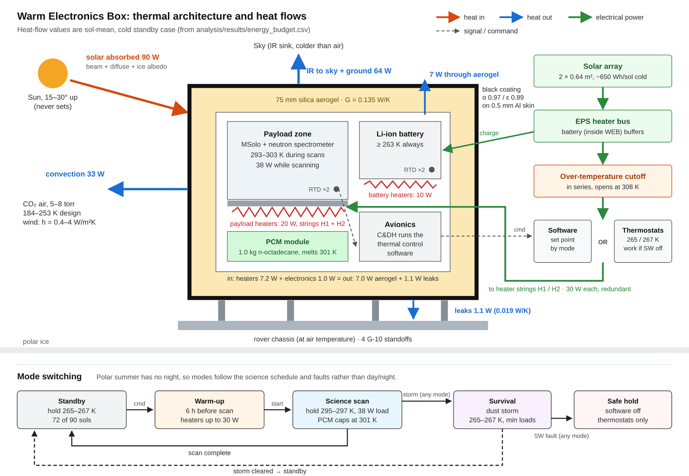
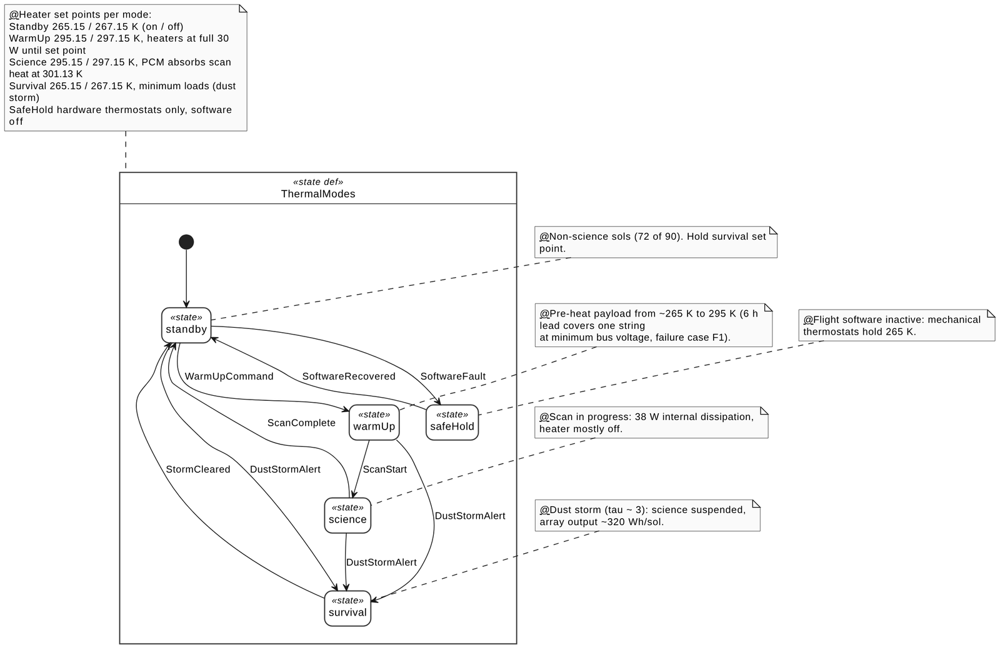
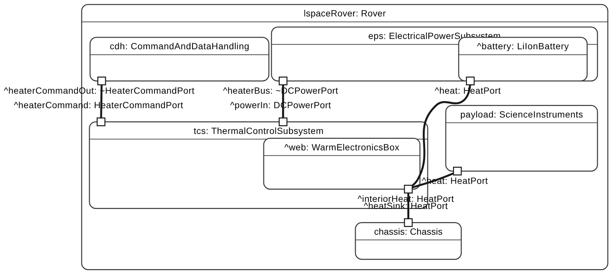
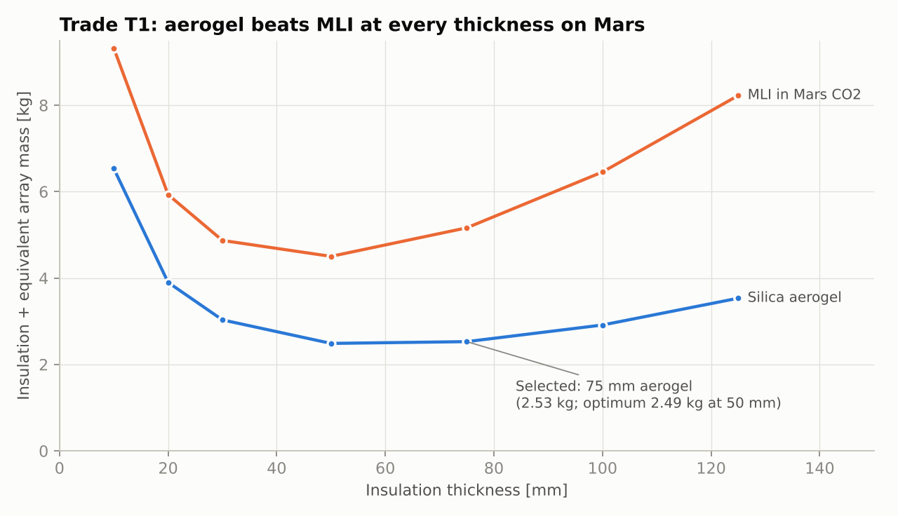
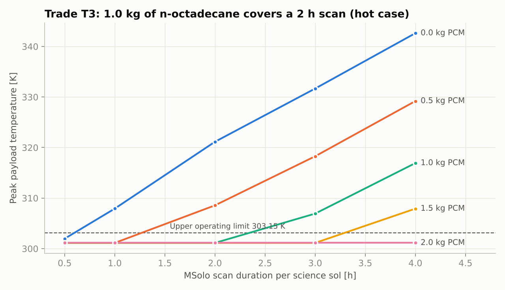
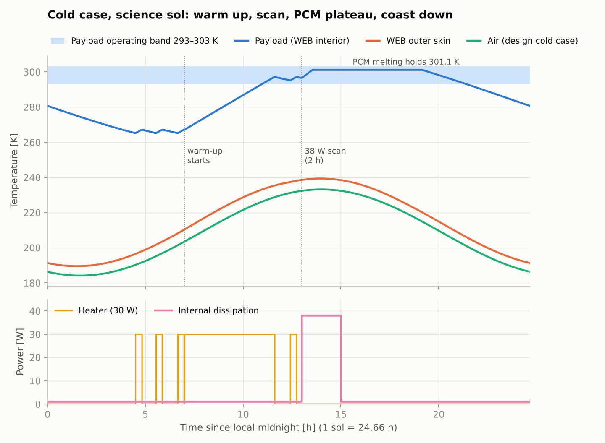

In 2023 I designed the thermal subsystem for a student Mars rover concept, and its energy balance never closed. Holding the payload at 295 K in the cold case took 275 W of heat; the redesign needs 12 W. This is the revision: requirements, a verified thermal model, trade studies, failure analysis and a SysML v2 model, ending in a design whose numbers add up.
The whole problem on one scale: the payload must sit 40–120 K above the air around it, on a solar-powered rover.
The rover crosses the north polar ice for 90 sols in northern summer, carrying a mass spectrometer (35 W while scanning) and a neutron spectrometer. In polar summer the sun never sets; it circles 15–30° above the horizon. So the hard cases are a dusty cold sky and a power fault, not a night.
I rewrote the four vague 2023 requirements into twelve traceable ones. Each has a parent, the component it is allocated to, a verification method and a pass criterion. Two of the twelve came out of the failure analysis in step 06.
| ID | Requirement (shall) | Allocated to | Method | Status |
|---|---|---|---|---|
| TCS-01 | Payload 293.15–303.15 K from scan start to scan end | Heaters, PCM, software | Analysis | closed · 295.3–301.1 K |
| TCS-02 | Interior ≥ 263.15 K always, including with software off | Thermostats, aerogel | Test | test proposed |
| TCS-04 | Heater energy ≤ 200 Wh/sol cold, ≤ 250 Wh/sol storm | Aerogel, coating, ops | Analysis | closed · 176 / 195 Wh |
| TCS-05 | Worst-case heater duty ≤ 70 % at minimum bus voltage | Heater strings | Analysis | closed · 17.0 ≥ 16.4 W |
| TCS-08 | Payload ≤ 303.15 K through a 2 h, 38 W scan | PCM | Analysis | closed · 301.1 K |
| TCS-10 | ≥ 12 h survival with no solar input | Aerogel, battery | Analysis | closed · 16.8 h |
| TCS-11 | One heater stuck ON: interior ≤ 313.15 K | Over-temp cutoff | Analysis + test | new · 308.2 K |
| TCS-12 | Detect a failed string and switch within 4 h | Software, RTDs | Demonstration | new · open |
8 of 12 shown; the full matrix with parents and success criteria is in the design document.
The 2023 analysis treated the Martian sky as 3 K deep space, hit a 1 m² face with full sunlight at a 25° sun, mixed up its units and signs, and ended with a net balance of −1,080 W. I rebuilt it from radiation, convection, conduction and internal loads, holding the payload at 295 K and solving for what the heaters must supply.
| Design | Case | Insulation G | Heat loss | Heater, worst |
|---|---|---|---|---|
| 2023 polycarbonate shell | cold | 7.56 W/K | 275.9 W | 365.6 W |
| 2023 polycarbonate shell | hot | 7.56 W/K | 95.4 W | 201.6 W |
| 2026 aerogel box, 75 mm | cold | 0.135 W/K | 12.5 W | 16.4 W |
| 2026 aerogel box, 75 mm | hot | 0.135 W/K | 6.0 W | 13.8 W |
Heater sizing follows from the worst row: 16.4 W ÷ (0.70 maximum duty × 0.81 power at 90 % bus voltage) = 28.8 W, so each heater string is 30 W.
| Mode | Electronics | Heater | Solar in | IR out | Convection | Leaks | Stored |
|---|---|---|---|---|---|---|---|
| Standby | 1.0 | 7.1 | 90.2 | 64.1 | 33.1 | 1.1 | 0.1 |
| Warm-up (6 h) | 1.0 | 24.6 | 114.2 | 79.2 | 40.5 | 1.2 | 18.8 |
| Science scan (2 h) | 38.0 | 0.0 | 119.3 | 91.4 | 36.2 | 1.3 | 28.4 |
| Survival (dust storm) | 1.0 | 7.9 | 43.1 | 48.5 | 2.3 | 1.1 | 0.1 |
Each row balances to 0.000 W. The skin trades ~100 W with Mars, but only a few watts cross the aerogel; that is all the heaters pay for.
A Warm Electronics Box: black-coated skin, 75 mm of silica aerogel, and inside it the payload, battery, avionics and a phase-change heat sink. Two redundant heater strings are switched by software, or by mechanical thermostats if the software is down, each behind an over-temperature cutoff.



Every option ran through the same model, so each decision rests on a number rather than a pros-and-cons list.
MLI loses at every thickness: in 5–8 torr of CO₂, gas conducts between its layers. Aerogel's optimum is 50 mm, but 75 mm costs only 0.04 kg more and buys survival margin.
The box always loses heat, so absorbing sunlight is free. Black uses 4× less heater energy than white in the hot case and doesn't depend on staying dust-free.
Without it a 2 h scan reaches 321 K. The wax melts at 301.1 K, inside the band, and holds the payload there with 25 % margin.
Eight radioisotope heater units would overheat the box at 318 K. Heaters alone close the power budget; four RHUs stay as a fallback.


A two-node transient model in MATLAB: an interior node whose enthalpy formulation captures the wax melting, and a skin node. It runs with a thermostat-style heater controller. The biggest saving it found was operational: warming the payload only before the 18 science sols instead of all 90.

No hardware was built, so the model is verified, not validated. Seven automated checks show it solves its equations correctly: it matches the hand calculation to 10⁻⁷ K, conserves energy, converges in time step, gets the sun geometry right, melts the PCM on schedule and reproduces the 2023 inputs. Proving it matches reality takes the chamber test below.
| Proposed test | Setup | Pass criterion |
|---|---|---|
| Survival thermal balance | CO₂ at 600–1000 Pa (not hard vacuum, because gas changes insulation), walls 184 K, software off | Interior ≥ 263.15 K; model conductances within 20 % |
| Thermal cycling | Heaters, thermostats, cutoffs, PCM, aerogel; 184–303 K | No damage, set-point drift < 1 K |
| Aerogel conductivity in CO₂ | Guarded hot plate at 5–8 torr | k ≤ 0.012 W/m·K |
| Heater failure | One string off at 90 % voltage; one string forced ON | ≥ 293.15 K at scan start; cutoff holds ≤ 313.15 K |
Every nominal case passed. The failure cases did not, and fixing them is the part of this project I would point to first.
| Scenario | Found | Change |
|---|---|---|
| One heater string lost, the other at low bus voltage | Payload only 290.7 K at scan start | warm-up 5 h → 6 h now 295.6 K |
| Survival set point on the survival limit | Box dipped below 263.15 K every cycle | set point → 265 K |
| Heater stuck ON | Payload reached 423 K | 308 K series cutoff peak 308.2 K |
| All heater power lost (cold soak) | Battery limit reached in 4.9 h | new TCS-12 switch within 4 h |
| Dust storm, heaters limited to 10 W | Holds 263.7 K | no change |
Consequence (up) by likelihood (across), 1–5. Score ≥ 12 high, 6–11 medium.
| ID | Risk | Mitigation |
|---|---|---|
| R1 | Aerogel conducts more in CO₂: at k = 0.015, 258 Wh/sol | Measure k first; 100 mm plus RHUs |
| R3 | Total heater loss: cold soak to battery limit in 4.9 h | Redundant strings; switch within 4 h |
| R4 | Heater stuck ON | 308 K series cutoff |
| R5 | Low power in a dust storm | Survival mode; holds on 10 W |
| R2 | Polar cap colder than the Phoenix data: 225 Wh/sol | Larger power allocation; RHU fallback |